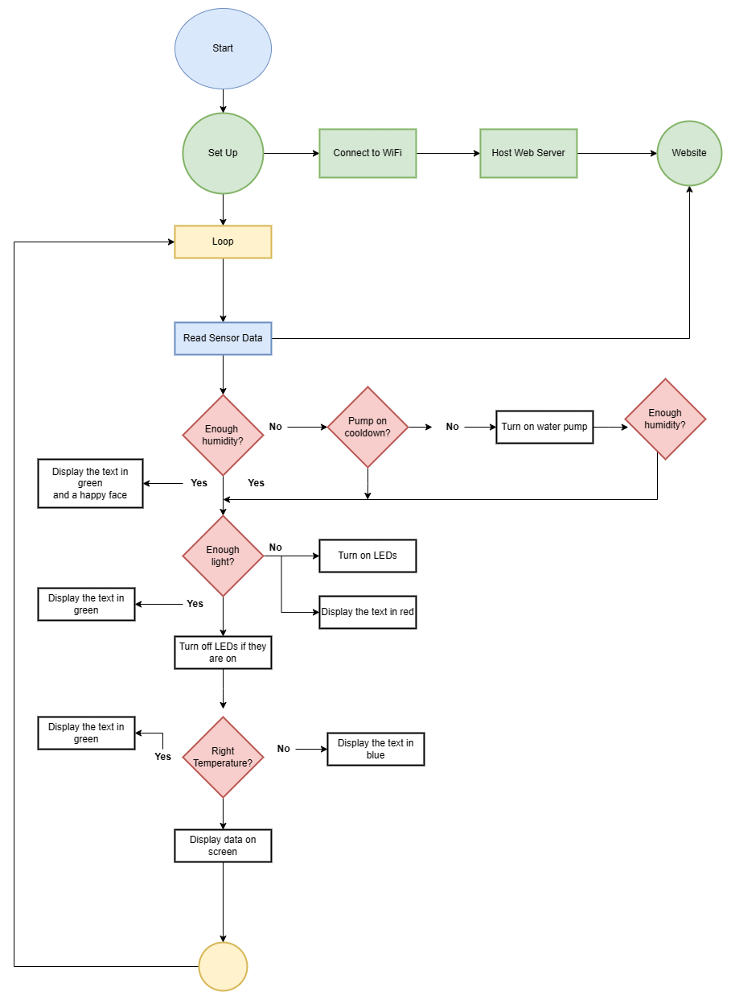
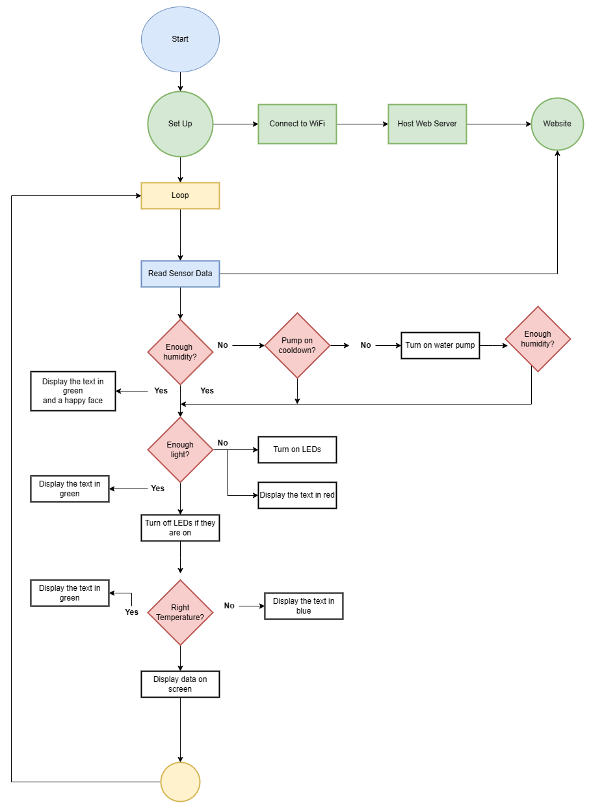

C++ Object Detection Application
University assignment project
Main Features
- Collect data about soil humidity, temperature and environmental light
- LED strips for when there is no natural light available
- Water tank and pump for when the soil gets dry
- splay screen for showing information
- E-mail notifications
More details
It is a smart plant box equipped with sensors for monitoring the soil humidity and environmental light, and will try to help the plant grow healthy by automatically providing it with water and light when necessary.
It has a TFT screen that shows humidity, light, and temperature information as well as a little face so you know the status of your plant at a first glance.
It can connect to the Internet and send you an e-mail in case your plant has been thirsty for a while. This is done by sending a HTTP request with the plant status information to a Webhook configured on IFTTT. This applet triggers an event that sends a preconfigured e-mail containing your information.
The biggest challenge I had to face was the imminent loss of memory. As the MCU only had 2KB of SRAM, I had to find solutions while implmenting some features, to save as much of it as possible, and not allow the lack of memory affect other features.
Gallery

 
